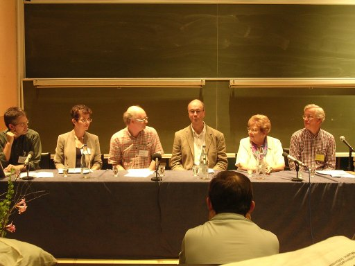
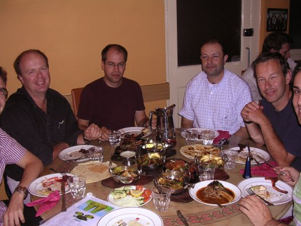
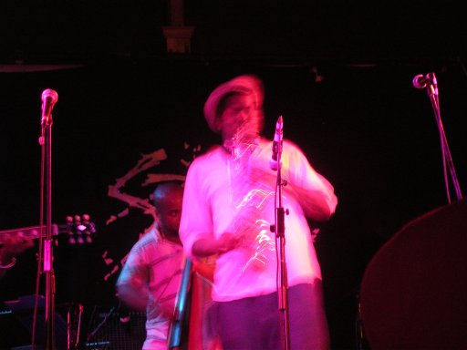

So lets talk about ISMIR. This year's ISMIR is being hosted by Queen Mary University of London and Goldsmiths College, University of London. This year ISMIR has some corporate sponsors including Microsoft research, Hewlett Packard, Philips Research, and Sun Microsystems. ISMIR is starting to be recognized in the industrial/commercial world as an important conference in today's world of digital music. (It has already been recognized as such in the academic world).
About 230 people are attending ISMIR this year, representing 25 countries. The proceedings are over 700 pages long (and add to the amount of exercise I've been getting as I lug this precious volume up and down the streets of London).
One of the themes of this year's ISMIR seems to be Let's hook up the music technologists with the musicologists Indeed, these two groups, musicologists and technologist have not really collaborated too much in the MIR community which causes endless difficulties and duplication of effort. For instance, recently on the MUSIC-IR mailing list, there's been a debate about the usefulness of music genre classification (and the use of genre in general). It was pointed out (several times) today that it would be wise (and a heck of a lot easier) to just ask the musicologists how to deal with genre and all the problems it is causing since musicologists have experience answering just this this sort of question. This theme of improved communication and cooperation were outlined in the opening talk by Nicholas Cook, a Research Professor of Music, at Royal Holloway, University of London. Professor Cook warned that although computers have been a useful tools by musicologists for quite sometime, it is important to remember that the listening experience is an essential part of music analysis, and that with 'computer musicology' we are in danger of losing that.

One of my favorite talks of the day was by Jin Ha Lee from the University of Illinois at Urbana-Champaign. She talked about a very interesting problem that I didn't even know existed. Imagine hearing music from another culture. If you really like the music, you might want to hear more of the music, or you may want to learn more about the artist or the genre of this new music. Jin Ha points out that since all of our music search tools are text based we have no real way of forming queries for this music. We may not understand the lyrics, we certainly don't recognize the genre, we don't recognize the artist, we may not even understand the mood (since the mood of a song is often conveyed in the lyrics). Jin Ha suggests that for cross cultural/multilingual music information seeking, the best approaches for music search may be non-language queries such as query by example, query based upon music similarity, culturally neutral labels.
Gerhard Widmer from Johannes Kepler University described some interesting work involving data mining the web for co-occurrence of artists using a technique similar to Google's pagerank for discovering 'prototypical artists', that is, those that are the best representative for their particular genre. Some of the difficulties with mining the web are dealing with bands that have names that are also common words. Bands such as Queen, Kiss and Yes get skewed statistics because of their common names. I didn't dare ask how they'd deal with the band "the the".
Ian Knopke of McGill presented some early work in the geospatial location of music and sound files. Ian has a web crawler designed to find music and then uses a number of techniques to discover where physically the data is located.
Thomas Lidy presented some excellent research on how to evaluate feature extractors and psychoacoustic transformations for music genre classification. Thomas was able to show how their rhythm histogram led to genre classification accuracy improvements. I wonder about some of the testing methodology though. I think some of the test data sets were too small, or Thomas's classifier was over-fitting because there was some unexplained large difference in accuracy across different data sets. This highlights one of the trouble spots for audio classification ... there just isn't enough data for testing and training systems. The copyright problems make it very hard to get an adequate sized, labelled collection that researchers can share.
Cory McKay of McGill described the framework for optimizing music classification that they've been building. Cory and others have been building ACE, the Autonomous Classification Engine. Given a set of features, ACE will try a number of classifiers, tuning parameters, classifier ensembles and other techniques to try to optimize the classification. ACE is written in Java and is released (or will be soon) under the GPL. ACE looks really interesting. It will be a great tool for anyone trying to improve music classification algorithms. I expect that ACE will help raise the bar in a number of classification tasks at next years MIREX. The McGill team is also releasing several other open source Java-based packages for use by MIR developers. With these contributions, McGill is really adding value to the MIR community. Go McGill!
Audo to ScoreThere were a number of talks in the 'audio to score' track describing techniques for extracting pitch, onset, and harmonic content directly from audio. These are probably some of the most mathematically intensive talks of the conference, .. the math was flowing .. at one point a slide was shown with probably 10 separate formula, with the speaker comment of "and then some math occurs and then ...". Two separate papers presented by students from the University of Tokyo involved pitch extraction. There was an interesting audio demo of converting an audio stream to MIDI data. These system were able to deal with harmonies generated by piano and guitar quite well.
Monday Posters
During lunch time we were able to review a number of posters while we munched on our sandwiches and finger food. There were just too many posters for me to get a chance to talk to all of the presenters, but I did talk to a few folks. Some highlights:- Playsom Robert Neumayer was demonstrating his PlaySom system. PlaySom is a user interface that allows the user to browse a large music collection by navigating a map of clustered music tracks. This approach provides a potentially better way to find and build playlists on small devices.
- Sonixplorer A system that uses visualization and auralization for content-based music exploration of music collections. Dominik Lubbers showed a clustering system where aural browsing of music collections were possible.
- Foafing the Music This system uses 'friend of a friend' and RSS for recommending music depending on the users personal tastes. This system, developed by folks at Pompeu Fabra in Barcelona Spain mines data from RSS feeeds including Audioscrobbler as well as based upon the content of the music (i.e. content-based music similarity).
- Rebecca Fiebrink was describing her work on using genetic algorithms for determine feature weighting for music classification. You can try it out at their website.
The day ended at about 6:30. I ended up joining a group going out to
dinner in an East London Indian Restaurant. Jeremy Pickens was kind
enough to shepard the six of us through the tube and to the
restaurant. The food was excellent, and plentiful (and extremely
inexpensive for London).

And finally the day was capped off with a
Jazz/rap concert by Soweto Kinch in Spitalfields.

You don't hear music like that in New Hampshire.
All in all it was a great day. And now ... off to bed ...